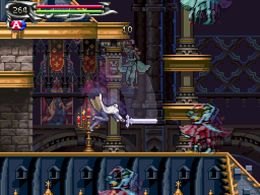
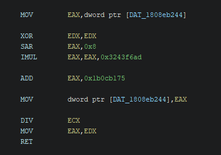

2025-07-23
Anyone who has played Castlevania: Dawn of Sorrow knows the struggle of endlessly farming soul and item drops. I think most people have also heard of the luck stat being broken, to the point of barely doing anything!
Are you telling me this was all pointless???
While this is a known issue, I wanted to look into it myself and see what the problem is.
Unlike most other games I look at, DS games were mostly written in some higher level language than just assembly. To inspect the innards of the game it therefore made sense to use Ghidra, a reverse engineering tool capable of outputting decompiled C code. Since a computer generated the assembly from a higher level language according to certain rules and logic, it makes sense to me that a computer would also be decent at decompiling it as well.
This makes it a bit easier to understand what the game does at a glance.
Thanks to this excellent write-up on reverse engineering DS games, getting started was a breeze! I used a program called Tinke to extract files from the rom instead of the suggested DSLAzy / ndstool programs, though.
For live debugging I ended up using DeSmuME as I could at least get it to work... debugging DS games is not in a great state, a far cry from today's golden standard of Mesen.
Let's dig in!
I eventually identified the drop function and analyzed the important bits of it. Let's first look at soul drops.
The formula for soul drops is:
(scaled_soul_rarity + 1) / (32768 - scaled_luck)
...where scaled_soul_rarity is the enemy's soul rarity * 64, or its soul rarity * 128 + 8 if the Soul Eater ring is equipped. scaled_luck is luck * 8, or luck * 32 if hard mode is enabled. Yes, luck helps more in hard mode!
Below is a graph of the drop rates of two souls: a fairly rare drop (Ghost, 8) and a common drop (Yeti, 64). While it might seem sensible to keep luck in the range of 0-99 since the max luck you can attain is somewhere around 100, we're going to blow up the scale here a tiny smidge with a 40-fold increase (0-3960). This might seem a little silly but it'll help for demonstration purposes.
After charting out two soul rarities we can see that the higher the drop chance, the more luck helps. Additionally, every extra point of luck helps more than the last point.
It's a reciprocal formula, and the drop rate approaches infinity as luck gets closer to 4096 (division by 32768 - 4096 * 8 = 0).
Okay, so that's kinda weird! Rare souls gets less help from luck compared to more common souls. Even the common soul gets a very modest increase until you reach 1000 luck! It almost feels like they were off by an order of magnitude somewhere...
So that's the formula. But what about the actual implementation of the formula? Reality seldom matches formulas perfectly, after all.
Let's examine these two soul drop chances again, this time with luck in the range of 0-99. The two nice and smooth lines are once again derived from the formula above. The jagged lines are the actual drop rates based on the game's implementation of the formula.
Now we can see that 99 luck doesn't always give the highest drop rate due to how the formula is implemented. Levels 15, 58 and 65 are the best luck values for getting 8 rarity souls, for example! The best luck value also varies with the soul rarity.
Based on the rarity values used in the game, 78 luck ends up having the highest positive deviation while 37 has the highest negative deviation.
My posts just wouldn't be complete without a dissection of the RNG, so that's up next!
One late afternoon, a programmer at the konami offices patted himself on the back. After all, why wouldn't he? He had just improved the tried-and-true random number generator, the LCG! His team members were probably really impressed.
Hoooo boy.
To recap, the LCG number generator is very simple. To get the next random number in the sequence you take your current random number, multiply it by some constant and add a constant:
rng_state = rng_state * a + c
It's neither the best nor the worst generator available, but it's well understood and very simple to get right - valuable traits considering how easy it is to get randomness wrong. The one thing you have to remember is that the low bits are of low random quality, so for a 32-bit rng state (which is the case here) you might discard 8-16 bits of the output before use.
This is what the extra smug programmer came up with:
rng_state = (rng_state >> 8) * 843314861 + 453816693
It's almost the same, except it's now discarding the low bits directly from the rng state, then multiplying and adding. Wow! Not using those low quality bits in calculating the next state must improve the output quite a bit, right? ...right?!
A 32-bit LCG can at most produce 2^32 values before repeating, that's 4294967296 values. With the modifications it produces... 1719 non-repeating values, and then falls into a stable repeating cycle of... 5547 values. Whoops. After that i didn't even bother running any more tests.
As RoadrunnerWMC put it:
"random number generation is one of those things where you should seriously not mess with tried-and-true formulas unless you really know what you’re doing."
Check out his full post, while you're at it!
On the bright side, this change did made calculating the percentages for the code implementation very simple: for each soul rarity and luck stat, simply try all possible 5547 rng rolls and see if it would drop a soul or not. I didn't include the first 1719 unique rolls as the game whizzes past those in about 30 seconds after boot.
As a sidenote, it's always interesting to see where these kinds of constants used for RNGs come from. Searching the web for these mainly leads to posts about... GCC's fortran compiler? But the posts were created way after the game was release... maybe Dawn of Sorrow and the fortran people got these magic constants from the same source, a source which is seemingly unknown to the internet.
Anyway, let's get back to the drop rates...
Regardless of whether a soul drops or not, the function will then move on to checking for item drops. The item formula is essentially the same as the soul formula, but with different constants (and no +1 to the scaled rarity):
scaled_item_rarity / (8192 - scaled_luck)
...where scaled_item_rarity is the item rarity * 24, or item rarity * 48 if the Rare Ring is equipped, and scaled_luck is once again luck * 8, or luck * 32 if hard mode is enabled.
The item formula constants can be simplified and still forego the use of decimals unlike the soul drop formula. I've opted not to here for consistency though.
Since the denominator constant is smaller here, luck actually helps a about four times more than for soul drops! It's still bad due to the reciprocal formula where most of the increase happens as you get closer to 1024 luck.
Enemies can have two types of drops: common drops and rare drops (the second item on the enemy stats page). Right before the above item drop check runs, the function checks if the rare item should drop instead of the common item, if it exists. We're quite familiar with this formula by now, here used to determine if a rare drop should happen:
rare_drop_chance / (8192 - scaled_luck)
rare_drop_chance is 2048, or 4096 if the Rare Ring is equipped. Notice that the rarity is hardcoded for rare items.
As a recap of sorts, going from 0 luck to 99 will increase the soul drop chance by a rather stingy ~2.5% of the base drop chance, while the base item drop rate gets a slightly more generous ~10.7% increase... which is still not much, unless the base drop rate is already pretty high.
The Soul Eater Ring and the Rare Ring are a must for better drop rates, in other words!
As mentioned in the beginning, this is not a new discovery. In fact, the castlevania wiki has the drop rates (but item drop rates seem botched, oops!), the formulas (mostly correct!) and notes about how little luck helps!
I should also probably mention the PC release with the Castlevania Dominus Collection. The luck stat was left as is; expected, but still a shame. Also, while it's already confirmed that the collection isn't just an emulator, I looked at the files myself out of curiosity. I found a lot of the game logic, including the drop function, and it is indeed natively compiled.
Part of the RNG modulus function, with an inlined update of the RNG in x86.